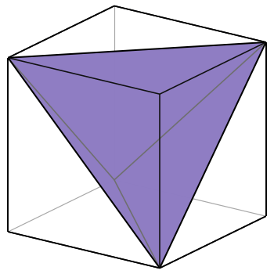
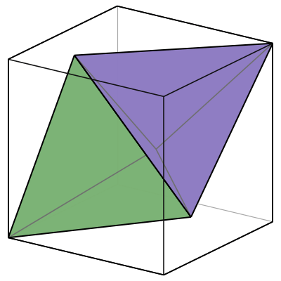
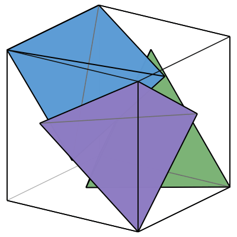
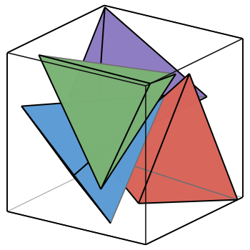
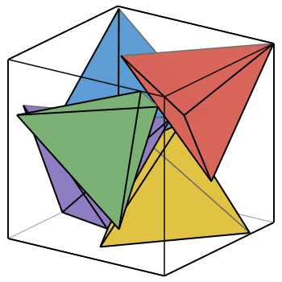
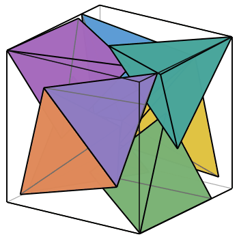
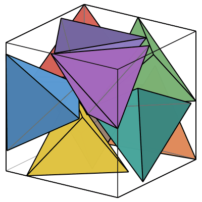
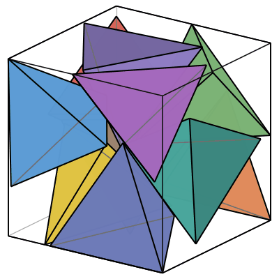

| 1.  | 2.  | |
| s = 1/√2 = .70710+ Trivial. | s = 2√2/3 = .94280+ Trivial. |
| 3.  | 4.  | |
| s = 1 Found by Achille Hui in February 2016. | s = 1.14233+ Found by Riain Walsh in June 2026. |
| 5.  | 6.-8.  | |
| s = 1.22999+ Found by Riain Walsh in June 2026. | s = √2 = 1.41421+ Found by Riain Walsh in June 2026. |
| 9.  | 10.  | |
| s = 1.75495+ Found by Riain Walsh in June 2026. | s = 1.79102+ Found by Riain Walsh in June 2026. |